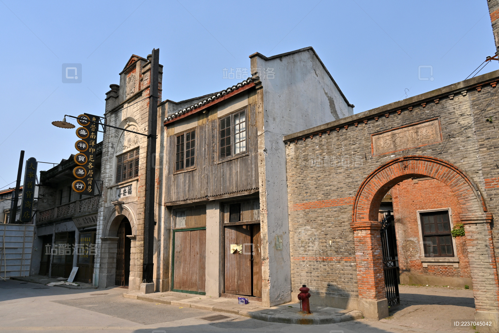
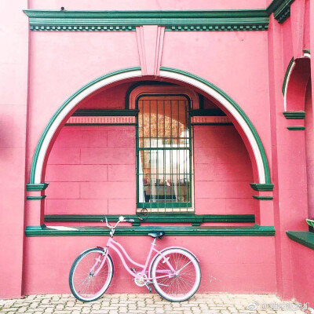
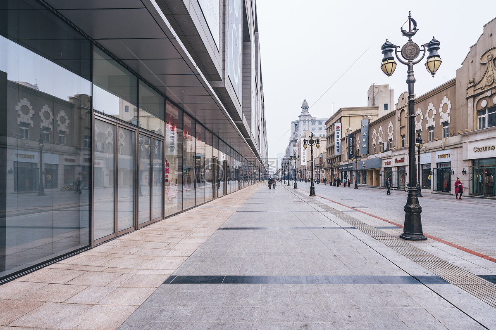
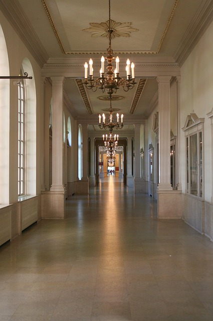

Results: Depth Estimation and Reconstruction
Mono depth Estimation
With Metric-Solver, depth estimation can be performed from a single monocular image, enabling monocular reconstruction of the environment.








Mono video depth Estimation
Metric-Solver supports metric depth estimation from video sequences, thereby facilitating the reconstruction of dynamic 4D environments.
BibTeX
@article{wen2025metricsolver
author = {Wen,Tao and Wang,Jiepeng and Chen,Yabo and Xu,Shugong and Zhang,Chi and Li,Xuelong},
title = {Metric-Solver: Sliding Anchored Metric Depth Estimation from a Single Image},
journal = {arXiv preprint arXiv:2504.12103},
year = {2025},
}